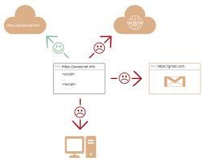

자바스크립트는 ‘웹페이지에 생동감을 불어넣기 위해’ 만들어진 프로그래밍 언어입니다.
자바스크립트로 작성한 프로그램을 스크립트(script) 라고 부릅니다.
스크립트는 웹페이지의 HTML 안에 작성할 수 있는데, 웹페이지를 불러올 때 스크립트가 자동으로 실행됩니다.
스크립트는 특별한 준비나 컴파일 없이 보통의 문자 형태로 작성할 수 있고, 실행도 할 수 있습니다.
이런 관점에서 보면 자바스크립트는 자바(Java)와는 매우 다른 언어라고 할 수 있습니다.
